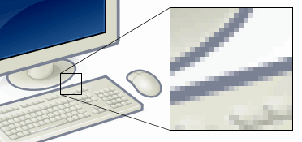
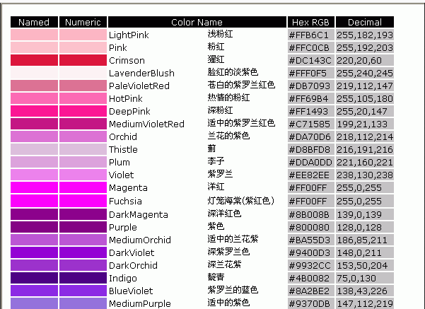
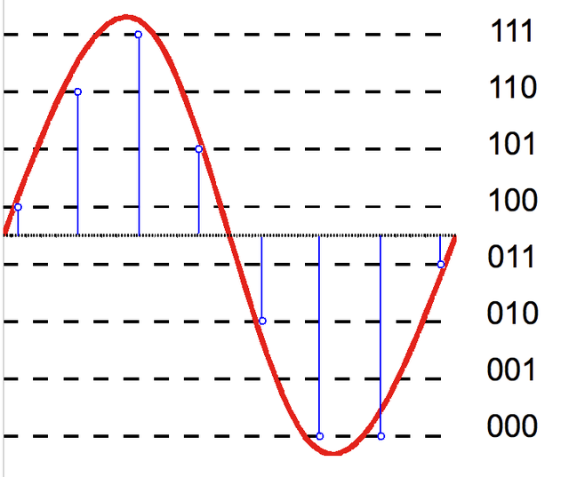
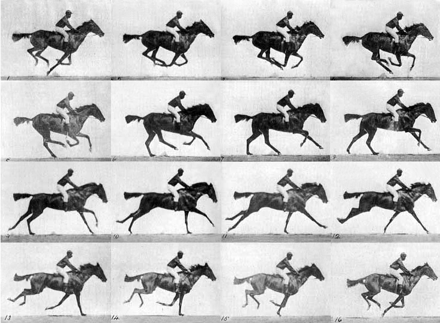

Queremos más...¡Vivimos en la Sociedad del Conocimiento y necesitamos almacenarlo! No sólo vamos a almacenar números en un memoria, tenemos multitud de datos que guardar. Hasta ahora hemos aprendido a almacenar números pero hace falta almacenar texto, imágenes (¡muchas!) y ficheros (que incluirán también audio o vídeo).
¿Cómo lo hago?
2. ¿Algún estándar para codificar y transmitir vídeo?
Agrupamiento:
Grupo
Ahora vamos a conocer qué medidas se han tomado para transmitir según la naturaleza de la información. Para familiarizaros con los estándares, vais a buscar información sobre dos concretos que se utilizan para transmitir vídeo y conoceréis que cada estándar implica seguir unas normas que se utilizarán tanto en origen como en destino para poder entender lo transmitido.
Investigad en Internet en qué se diferencian estos dos estándares existentes para la codificación y transmisión de vídeo:
NTSC
PAL
3. ¿Cómo almaceno mis textos?
¿Cómo podemos almacenar texto si un ordenador sólo entiende de ceros y de unos?
Ahora que sabemos codificar, ¡tenemos la solución!: asignando a cada carácter de texto (que puede ser una letra, un dígito o un símbolo como la "%") una secuencia de unos y ceros, que es única para cada carácter. A esta asociación se le llama código de caracteres.
Uno de ellos fue el primer estándar digital: el código ASCII (American Standard Code for Information Interchange): formato que usa 7 bits para representar cada uno de los 128 símbolos.
Es un código de caracteres basado en el alfabeto latino, tal como se usa en inglés moderno.
¿Cómo se ha resuelto el problema de los caracteres especiales de las lenguas del mundo?
Por ello surgieron otros estándares que cubren estas carencias:
Extienden la tabla para incorporar los símbolos comunes a lenguas románicas occidentales: para ello usan un bit más, el octavo bit que quedaba libre en ASCII, por lo que la extensión ocupada por cada carácter sigue siendo un 1 byte.
Como llegó un momento en que 8 bits por carácter se quedaban insuficientes, se diseñó esta representación de 16 bits por letra que permite representar 65536 símbolos diferentes.
Haz clic para ver un ejemplo de caracteres Unicode con su representación hexadecimal en mayor tamaño:
4. Pon a prueba tus dotes de observación
Observa bien el código anterior y averigua:
¿Cuántos bits utiliza para representar cada carácter? ¿Se puede almacenar en un byte?
¿Sabes qué representan los elementos de la tabla formados por dos o tres letras? Intenta averiguar qué significan DEL y CR.
¿Se ha seguido algún orden a la hora de crear la secuencia de codificación?
Compara cada mayúscula con su correspondiente minúscula. ¿Se te ocurre algún método para pasar de mayúsculas a minúsculas fácilmente sin tener que reproducir de nuevo la secuencia de bits de la letra?
¿Crees que con los caracteres de esta tabla tenemos suficiente para representar todos los idiomas? Contrasta tus respuestas con las de tu clase.
¿Necesitas ayuda?
Veamos cuáles son las características destacadas que has deducido:
Cada carácter se codifica con 7 bits: se puede guardar en 1 byte (sobra un bit) y es posible representarlo como un valor entre 0 y 127.
Los símbolos representados por letras son caracteres de control: sirven para controlar los dispositivos en los que se muestra el texto (impresoras, pantallas). Visita el enlace propuesto como definición y averiguarás sus funciones.
Puedes ver que se respeta el orden alfabético en las minúsculas, en las mayúsculas y en los dígitos: si un carácter va alfabéticamente delante de otro, su código ASCII es menor que el de ese otro.
Las mayúsculas y las minúsculas tienen códigos que se diferencian en un bit: ¡es fácil entonces pasar de mayúsculas a minúsculas sumando una cantidad fija al código binario que representa cada letra!
Desventaja encontrada con el tiempo: No hay representación para las letras con acento gráfico, para la letra 'ñ' o para los signos de puntuación del español, francés, portugués...
5. Trans-mitiendo men-saje...Beep!
Escribe para la codificación ASCII para el siguiente texto, teniendo en cuenta que el espacio en blanco también tiene asignado su propio código y que una misma letra en minúscula tiene un código diferente a esa letra en mayúscula:
PC transmitiendo...
Recuerda que en la codificación de textos se utiliza el código ASCII de cada carácter.
6. ¿Cómo almaceno mis imágenes?

Aunque hemos visto que podemos representar con un byte cada carácter y el texto como una secuencia de caracteres, en pantalla vemos las imágenes, no la secuencia de unos y ceros ¿Cómo se consigue que los bits se conviertan en imágenes?
Hay dos ideas clave:
Una imagen es una matriz de píxeles.
Un píxel es un punto de la imagen.
En función de esos píxeles vamos a encontrarnos tres tipos de imágenes: en blanco y negro, en blanco y negro con tonalidades de grises y en color. Veamos cómo almaceno cada una de ellas.
Imagen en blanco y negro
Este es el caso más sencillo, ya que cada píxel es un cero o un uno dependiendo del color blanco o negro. Es la imagen que menos tamaño ocupa en memoria. Un ejemplo es:
Las imágenes en color se forman combinando tonos de tres colores básicos de la pantalla: rojo, verde y azul (RGB, del inglés “red, green, blue”).
Cada color se describe con tres números que indican la cantidad de cada color básico que lo forma. Cada número tiene un valor entre 0 y 255. Describir cada color requiere en este caso 3 bytes. También es muy común encontrar las cantidades de RGB expresadas en hexadecimal:

7. ¡Codifico píxel a píxel!
Comprueba que sabes cómo se codifican las imágenes en un ordenador respondiendo a las siguientes preguntas y ejercicio:
7.1. Investiga
Agrupamiento:
Individual
Investiga en Internet para responder. Infórmate de cuántos bits se utilizan por píxel para codificar una imágen en los diferentes formatos:
GIF
JPEG
PNG
7.2. ¿Cuántos bytes...?
Agrupamiento:
Por grupos
¿Cuántos bytes ocupa una imagen en blanco y negro de 700×500 píxeles?
¿Cuántos bytes ocupa una imagen con 256 tonos (niveles) de gris de 700×500 píxeles?
¿Cuántos colores pueden representarse con la codificación RGB de 3 bytes?
¿Cuántos bytes ocupa una imagen de 700×500 píxeles en este último caso?
Una imagen en blanco y negro de 700×500 píxeles ocupará 43750 bytes o unos 42,72 KB.
En este caso, para cada píxel necesito un byte. La imagen ocupará 350000 bytes, lo que son unos 341,8 KB.
Para cada color (R, G o B) tendremos 255 posibles valores. Combinando los tres existen 16777216 de posibles colores.
En este caso, para cada píxel necesito 3 bytes. La imagen ocupará 1050000 bytes, lo que es aproximadamente 1 MB.
8. ¿Cómo almaceno mis ficheros de sonido y vídeo?
Hasta ahora hemos visto cómo codificar números, cómo codificar textos e imágenes. Todos ellos se pueden combinar para formar parte de un fichero, ya que son secuencias de ceros y unos. Simplemente usando caracteres de control (ver tabla ASCII) con los que indicarle al ordenador cuándo comienza cada tipo de información, se pueden combinar dentro del fichero y representarse después correctamente.
Pero, ¿cómo envío al ordenador un fichero de audio o uno de vídeo?
¡Sólo nos falta saber esto para poder comunicarnos completamente con nuestro ordenador! Consulta y realiza la reflexión propuesta.
Fichero de audio
El sonido es una onda que podemos capturar con un micrófono. Esta onda, como has visto en otras asignaturas, tiene una amplitud en el tiempo.
Observa la onda:

¿Qué dos características crees que son importantes para almacenarla como ceros y unos?
La cuantización: número de bits que vas a utilizar para el valor de amplitud.
La frecuencia: número de muestras que vas a tomar por segundo.
¿Cómo harías el almacenamiento de esta onda? Relaciona las dos caracrerísticas anteriores.
Fichero de vídeo
¿Has realizado algún vídeo? Seguro que sí. Actualmente hay muchas aplicaciones que generan vídeo a partir de fotografías.

Efectivamente: un vídeo es una secuencia de imágenes en movimiento. Estas imágenes son frames o fotogramas. El movimiento representado es la animación del vídeo. Esta animación es la que permite la codificación en binario: se presenta una animación de frames por segundo.
¿Cómo harías el almacenamiento de un vídeo? ¿Qué datos debes tener en cuenta?
Es una medida de la variación máxima del desplazamiento u otra magnitud física que varía periódica o cuasiperiódicamente en el tiempo. Es la distancia entre el punto más alejado de una onda y el punto de equilibrio o medio.
Un fotograma es cada una de las imágenes impresas químicamente en la tira de celuloide del cinematógrafo o bien en la película fotográfica.
Pistas para el almacenamiento
Aquí tienes algunas reflexiones para tener en cuenta:
Para almacenar audio tendremos una serie de muestras por segundo que habrá que codificar con un número determinado de bits. Ambos factores son clave para la calida del audio. El resultado es nuestra deseada secuencia de ceros y unos. Además, hay que tener en cuenta que si se codifica en estéreo tendremos que grabar dos ondas de audio, por lo que la información a almacenar se multiplica por dos.
Para almacenar el vídeo necesitaremos saber el número de imágenes por segundo, así como el tamaño en píxeles y el color de la imagen. Con estos datos podremos codificar y obtener la secuencia binaria para almacenar la imagen.
Se llama sonido estereofónico o estéreo al grabado y reproducido en dos canales. Los discos de vinilo, los CD audio, la mayoría de las estaciones de radio FM, casetes y la totalidad de canales de TV y televisión vía satélite transmiten señales de audio estéreo.
8. Codifico en digital y estéreo
Agrupamiento:
Individual
En una grabación de CD con sonido estéreo (dos formas de onda) donde se utilizan 16 bits para la cuantización y se toman 44100 muestras por segundo (44 KHz), ¿cuántos bytes calculas que ocupa una canción de 3 minutos?
Esto implica que una canción de 3 minutos ocupa 30 MB.
9. Ahora ya sabemos...
Sabemos cómo se enviarán la información e instrucciones de nuestros programas al ordenador.